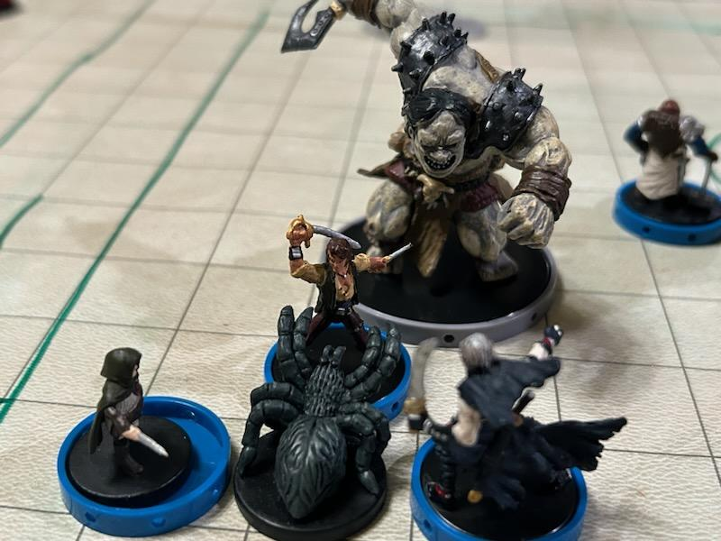

Adventures - Book 4
April 13th, 2023
We made it through the mountains! Not that we had any doubt, but it's good to see the sky again. Howling yetis made sure we had no desire to go back through anytime soon...
We have found a city almost right on the other side of the under-mountain pass. Prince Batsaikhar, the man in charge of the city, welcomed us as guests and threw a 5 day feast in our honor. During the festivities he had his entertainers perform in front of us and challenged us to match the feats. Tim's feats of strength, Edam's acrobatics and riding skills, and Haldir's oratory and performances kept the prince entertained through the feast days.
On the fifth feast day, the Prince held a parade in our honor, but nefarious forces are at work! We've been attackedby by sneaky bastards in disguise! Check back next week to see if we were able to discover the identity of our attackers
April 20th
At the end of last week's fight, a mysterious person appeared amongst the chaos of the fight and helped us dispatch the ninjas that were attacking us. When the fight was over, all the ninjas lay dead and the crowd was in a bit of a panic. The mysterious person introduced herself as Miyaro, a Kami spirit, and that she had known we were coming since we opened the warding box of the Amatatsu Seal. Once the ward had been broken, factions who had been looking for it knew it had been found.
Miyaro told us that a group known as the Five Storms were hunting us, looking to assassinate us on behalf of the Jade Regent. The Jade Regent is on the throne of Minkai. The rightful emperor has not been seen in a very long time, but no one knows what happened to him or where he might be.
We need to go to Minkai to unravel the mystery of our situation, but travelling with a large caravan makes moving secretly very, very difficult. Miyaro suggested that we take a trail through the Forest of Spirits. She tells us that we can move through easier than we would on the main road, where every turn might have an ambush.
With this suggestion our group and the caravan have left Ordu-Aganhei and have began our trip to Minkai.
April 27
As we take the path that our guide, Miyaro, has led us down, we have encountered spirits of the forest. We have found that most of these spirits are harmless, but we have to be careful, as Tim needed a timely intervention to remove a spirit that had decided to take a ride inside of him. Our half-orc friend singing the old songs of Tian Xia in Tian was...interesting.
After days of travel, we arrived in a grove of some sort that was full of benevolent spirits. They actually asked a favor of us, and after the help Miyaro has given us, and the help we still needed to get to Minkai, we could not refuse. They have asked us to go investigate a place called the House of Withered Blossoms. In addition, Akumi, fukujin kami, has asked us to try to retrieve his bonsai tree from the hobgoblins in the House.
April 28
We arrived at the House of Withered Blossoms. It was late in the day and we decided to camp outside the pagoda that is the “house.” As the sun set we witnessed the withered, rotting vines climbing all over the pagoda suddenly spring to life and grow at an unnatural rate. Over night our watched saw them continue to grow until they bloomed, and suddenly burst into almost a shower of petals and leaves. Occasionally we think we saw something moving amongst the foliage on the ground. As the sun rose, the vines withered again and the smell of rot and death again pervaded the area.
In the morning we entered the tower and discovered that it was full of traps, including one at the gigantic front door that fired daggers out of the mouth of the faces carved around it. Inside the traps were in the floor, but we were able to disarm most of them as we came upon them. We found a big hole in the floor of the bottom floor, but wanted to checkout the upper floors first, so we waded through the traps and undead (including one with a tongue that paralyzed at the touch. Ick!) to get to the top where we found weird, magical spider like creatures that shot webs, cast mirror image, and could disappear. We managed to kill them all, but man were they annoying.
June 3
As we move up through the pagoda that is called the House of Withering Blossoms, we continue to encounter spiders, thought this time they are different kinds of spiders, but just as ugly. Only a different ugly. We kill those and get to the top of the pagoda and find a person. Now, realize that to get up here we have burned through two really thick masses of webbing. The first group was funnel like that narrowed to a hole in the ceiling. So it was not easy to get here, and we get to the top and discover...a fat, dirty person. "Inside of the palanquin sits a corpulent figure swathed in filthy silk robes, which look as though they haven’t been changed in decades. Insects and spiders scuttle in and out of the folds of his robes and skin, and he occasionally plucks one up to chew as a crunchy snack."
He didn't seem to like us being there. Whistling sharply, he seems to have summoned numerous female figures clad in robes and wearing a black mask. They called shadowy spiders who drained strength and attacked us with daggers.
The fat, ugly guy turned out to be even uglier than imagined, as suddenly he had a spider body when he moved from the palanquin he was sitting in and transformed his shape. He scurried around, walking on walls and ceilings and just being a general pain. In the end, Edam used the fly spell from his celestial armor to catch him and deal the final blow after Haldir had dealt him blow after blow in a caster dual.
June 10
As we move up the pagoda, we found the top two floors completely empty. Apparently this is where the ladies who were called to attack us lived...you know, before we dealt with them.
So down we go. When we entered, we saw a big hole in the floor, but wanted to see what was up before we went down. Working our way back down we stood at the ground floor again, staring down a dark hole. We could only see a little ways down, and what we saw was smooth walls disappearing into the darkness. We decided to be careful going down, but it turned out that there were stairs after just 20 feet.
Those stairs took us into a large room with a rock wall stretching all the way across it. Big iron doors with no clear way to open them and arrow slits at the top, the wall looked formidable, but we moved in and tried talking first anyway. We were answered by a hail of arrows.
While Edam and Shura move to the base of the wall, Aelfread went invisible and flew to the wall and Haldir used his magic to take Tim to the other side of the wall. Tim quickly found out that these were not your average hobgoblins, and they hurt when they hit. Edam climbed the wall and slipped through a arrow slit (being the small halfling has it advantages) to give Tim a timely lay on hands (before being bopped on the head with a morningstar...ouch) and Haldir managed to open the big doors from the inside. Once everyone was in, we manage to deal with these hobgoblins.
But that wasn't all the hobbies. After a grotesque room full of traps, we encountered more, this time with a big guy. For being so big, he drew a lot of attention, so he didn't last long. Yeah, the other hobgoblins didn't like when he fell, as they sealed us in the room and threw a fireball at us. Tim managed to use his brute strength to lift the huge stone slab that sealed us in and, well, that was that.
June 17
As we continue to move through the hobgoblin territory, we realize that this isn't a small underground cave that they have dug out, this is a big complex of rooms that are filled with both traps and hobgoblins. We managed to get through the trapped room and found a huge, sprawling cavern that is so big we can see a castle build in the distance. Yes...an underground castle.
Our curiousity is piqued, but first we have to deal with what appears to be the main hobgoblin camp. We came upon them arguing over dinner, but when they discovered us, they rushed out to attack us while the women and children fled. We defended ourselves until the hobgoblins began to withdraw. But they didn't leave. Instead they were making way for their chief, an arrogant, evil hobgoblin that challenged one of us to individual combat. Edam stepped up and took the challenge.
Edam took the worst of several heavy hits from the chief's battleaxe, but in the end withstood the blows and brought the chief to a point where he decided honor dicated that he take his own life rather than lose to a halfling. The rest of the hobgoblins scattered when their leader fell and the party decided it was best we let them leave and get some much needed rest in Haldir's magical shelter.
June 24 & July 8

The dungeon crawl is real. After killing the hobgoblin leader, most of the gathered mass fled the field, but hobgoblins still inhabit the entire complex and we are at the beginning. The hobgoblins and their stone giant friends…allies?...slaves? whatever they are…present bumps in the road at every turn.
We have entered the Mockery Pagoda, a crooked pagoda carved from the rock of the cavern we are in. It’s walls are carved with twisted animal forms.
As we ascended the levels, we found another large group of hobgoblins. Edam snuck up a staircase and, carefully peeking over, saw a dozen hobgoblins that seemed to be waiting for the group. It’s no secret that we are here by this time, so that’s not surprising. Edam warned the group, took a greater invisibility from Haldir and rushed up. The entire party followed, and a huge, lengthy melee ensued. These are definitely NOT normal hobgoblins. We are not sure what we are going to find here, but a clay golem in the next room and walls full of depiction of pain and torture speak of something more than just hobgoblins. And then we found hobgoblins were nasty lesions from leprosy. They charged the party, clawing at us in an effort to infect us. They managed to infect Shura, our Cleric!
July 15
As we continue to work our way through this crooked pagoda, we encountered a huge room with a huge pit and some very nasty vapors coming up form the bottom. There were 6 inch wide bars running across, the only way to get from one side of the pit to another and, immediately, we had four female hobgoblin monks out to meet us.
A number of us braved the narrow passage to face the monks over the pit, which ended with Edam at the bottom of the pit...face to face with a gorgon of all things. Once the rest of the group dispatched the monks, with Tim and Aelfread in the lead, they came down to help Edam and the gorgon was dispatched with no issues. Haldir was the first down to help, flying down to see how Edam was fairing.
Moving on, we found four sleeping hobgoblin soldiers. Edam had snuck forward, so his paladin's honor ensured he woke them up and gave them a chance. They decide to fight, so their nap became a little more permanent. Soon after that, we encountered a single Ogre dressed as a samurai. He challenged Edam to single combat and Edam accepted. It became a moot point as the rest of the party was set upon by spiders and a wizard. The fight went well, and everyone was good at the end.
July 22
The next passage brought us into a large cavern with a waterfall in the middle, pouring down a hole in the floor with a spiral staircase running around the water. Edam snuck down first, though Shura wanted to take a more direct route directly down the falls.
Ninjas were guarding the bottom of the stairwell, or waiting for us to get there...but once they were dispatched we found ourself looking through a hole in the floor that dropped stright down, 60 feet into another cavern with water and stepping stones at the bottom. We decided to cast teleport and avoid the issue completely, arriving together on a dry strip of land near large doors.
We found another Ogre Samurai with another gorgon. This time the gorgon's breath was more consequential, Edam's companion and mount, the dog Crash, being turned to stone. Shura would have been turned, but being a Stone Lord, he only smirked at the gorgon and engaged in batte. Edam, meanwhile, was not happy. A little John Wick action dispatched the gorgon first, and then the rest the party took down the samurai.
July 29
As we moved through caverns, moving steadily lower through caverns, we continue to find creatures that would rather eat us than even look at us. One encounter was with creatures that looked like large worms with legs and short, skinny arms. One of them stood in front of the party, and as we attacked it suddenly there were five more that dropped from the ceiling. We dealt with the problem, but the party was getting short on resources.
We had to depend on a spell from Haldir to get some rest. A meal and sleep did the party a ton of good and we emerged ready to move forward once again.
August 5
The party came upon yet another hole in the floor, which water cascading down. At the bottom we found a large cavern full of cages, and the cages were not empty. Edam was the first to get to the bottom. He walked over to a cage and tried to talk to a ragged looking human who had obviously been in the cage for much too long. Suddenly the whole place was full of yelling and hooting occupants. Edam apparently disturbed a cavern full of mad occupants, and no, I don't mean angry mad. Moving away from the madness, the party is ambushed by a disfigured creature that we have figured out is a Ja Noi, an Oni spirit that takes the form of a hobgoblin. And then there were two of them.
Leaving that fight, having seen Tim give the killing blow to both spirits, we found another hole that was, it turns out, a passage submerged in water. Edam was the first to get through the underwater swim, with a rope attached, followed closely by Aelfread. The destination was a cavern flooded with four feet of water, so Edam was having trouble staying up (he's a halfling!). And…it was polluted with body parts. Ick. As the entire group made it to the cavern, we noticed that there was something moving in the water at the other end of the cavern…Haldir decided it was time to get out of that water with his slippers of spider climb and Edam cast “sky steed” on his companion dog, Crash.
Nagas. Ugly, evil Nagas. There were two of them and they decided to introduce themselves by casting a fireball at the party. It wasn't a easy fight, especially in the water, but we managed to dispatch them.
August 12
We are finally getting somewhere in this infernal place! As we continued downward through the holes in the floors, we came upon a room crisscrossed with chains and we were met by a young, Tian woman wearing traditional attire. She tried to convince us that “Nothing in the House of the Withered Blossoms was our concern. That her Mistress, the living God had been imprisoned here and was just trying to make it her home.” When Haldir replied that we were tasked with a mission by the spirits of the forest, the woman calmly told us that “it was the spirits that imprisoned her mistress here and that it was none of our concern.”
It was at this point that Edam noticed someone sneaking up behind the party and called out for everyone to watch out. We were attacked by strange women that were both wearing chains and using them as weapons. The original woman joined the battle but went invisible as she did. First Aelfread cast See Invisibility and then Shura cast Purge Invisibility and after a tough fight, we were triumphant.
But the dungeon crawl continued as we came upon a room of hobgoblin ninjas who didn't seem to want to talk at all, attacking the party immediately. We all worked together and defeated this group as well. These ninjas were in a library, were they guarding the books? Searching through, we learned some valuable information. Apparently the pagoda had once held five evil spirits, and four had escaped. As long as one stayed behind, the “protections” would remain in place. This mistress was the one who remained, and as a result we have to figure out how to lower the protections so that the spirts can come in and do their thing.
August 19
Wanting to move to the next room, Edam encountered a magical trap. Hmm. What is so important? Edam disarmed the trap and opened the door, immediately being assailed by a stench. The walls are covered with bodies that looked to be forcefully embedded into the wall.
Walking into the room with his hand over his nose, Edam was confronted by an absolute ancient looking Tian woman…eating from the mangled, but still alive body of one of the spider creatures, called a Aranea. And she ignored us. Completely. As we entered the room, she stood eating. Edam decided to walk across the room and look in a huge hole in the floor, to see golden statues AND figures contorted in anguish. The scene gave him a queasy feeling, so he turned away for now. As the rest of the party entered the room, suddenly shapes came alive on the wall. Well, not REALLY alive, as suddenly zombies were peeling themselves off of the walls. The ancient Tian woman suddenly shifted form. Haldir is our skald, and he immediately recognized the new form as Munasukaru, the “Living Goddess” that we have been seeking. The zombies were not too much of a challenge, but Munasukaru's spells became troublesome, and her acrobatics kept her just out of reach, and as a group the party found itself pressed to keep up. Shura stepped up and was equal to the task, keep the party healed with timely channels and overall healing.
Aelfread finally was able to get to her, but she managed to get a critical hit with a weapon that we later learned was the Thundering Blade of the House of Sugimatu. The pain of the hit shocked Aelfread, but he still stood against her. Edam saw Aelfread's predicament and moved forward to help, flanking the “Goddess.” At that point, Haldir was able to cast a spell of electricity, giving the killing blow.
Victory in the House of the Withered Blossoms
We learned that a demon door was down in the deep hole. It is how Anamurumon and the other oni escaped the House of the Withering Blossoms, leaving Munasukaru behind. By leaving her there, the forest spirits were not able to enter the House of the Withered Blossom. Munasukaru has been trapped in the place since, slowly going mad.
We took the time to rescue the poor souls that were entrapped inside the pagoda. The spirits helped as they could, but it still took days to get them all out and get them to a place where they could get help. Shura did his best to provide healing while Haldir used teleports to move people. We also managed to retrieve Akumi's bonsai while there, so we returned it to him and he was so grateful that he offered to join us, pledging himself to Haldir in our journey.
The demon gate was powered by the souls of those we saw in the pagoda. We are guessing that the oni that escaped here might be a problem ahead of us as we figure out the rightful rulership of Minkai. We must move forward and find the imperial palace to unravel the mysteries still surrounding us.